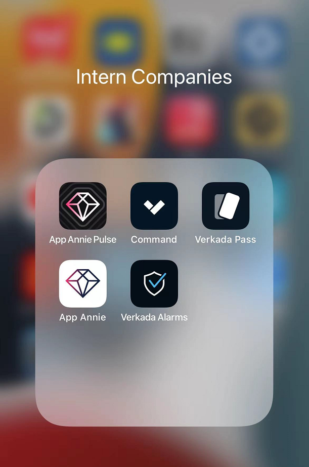

Waiting to be filled up...
Software Engineer - Cloud Infrastructure, Big Data and Web Full-stack Development.
Yufei(Kenny) Zheng
-
Technical Background

Undergraduate Study
- Bachelor of Engineering in Computer Science, GPA: 3.75/4.0, Graduated with distinction
- CourseWork: Data Structure, Operating System, Database Priciples, Computer Networks, Advanced Computer Architecture, Compiler Principles...
- Research Experience: Longyan Fruit Mall project, supervised by Prof.Gaoshou Zhai. Undergraduate project: 3D Human Pose Estimation System, supervised by Prof. Yongqi Sun
Graduate Study
- Master of Science in Software Engineering, GPA: 3.63/4.0
- CourseWork: Introduction to Computer System 18613(A), Cloud Computing 15619(A), Foundation of Software Engineering(18652), How to Write Fast Code I/II(18645, 18646)
- 6 Teamwork experience on course projects, ALL reveived top ratings from my teammates in CATME tools
Technical Skills
Strong background knowledge in Cloud Infrastructure(Kubernetes, Istio, AWS), Big Data(Spark, Snowflake, Data pipeline), High Performance Computing(SIMD, OpenMP and CUDA) and Full Stack Web Development(Frontend: React, Vanilla JavaScript Backend: Node.js, SprintBoot and DJango). He has three internship experience in HonestCoin(2019 Java software Developer), data.ai(Big Data Engineer) and Verkada(Infrastructure Team).
-
Projects Overview
Cloud Computing
15619 Team Project(Cpp(Drogon), AWS RDS(MySQL), EKS with Managed Node Groups, Kubernetes, Docker, SparkSQL)
- QR Code en(de)code application, BitCoin Transaction ledger application(CPU Intensive), Twitter recommendation application(ETL, RDS query, memory intensive application)
Uber Message Recommendation(Java, Kafaka&Samza)
- Streaming data processing to recommend order for drivers
Parallel Computing
Fast CNN(CUDA, OpenMP)
- Reimplemented all layers of CNN with CUDA, OpenMP and profiling performance by specifying different layer sizes
Fast Canny Edge detection
- Implemented four kernels with embeded Assembly Language, SIMD and OpenMP, achieved 90%+ theoretical peak performance.
Web Applications
Demo videos are available at below sections
Emergency Social Network(Python, Django, TypeScript, React.js, MongoDB) [https://esn-yufei.herokuapp.com]
BookHub(JavaScript, Node.js, Vue.js, MongoDB) [http://www.yufeizheng1998.com:8087/#/login]
Incident Response Application(TypeScript, React.js, Node.js, MongoDB, CircleCI) [https://s22-sem-ir.herokuapp.com/]
Longyan Fruit Mall(Java, Spring, SpringMVC, Mybatis, Redis, ElasticSearch, Node.js, Vue.js)
High Performance Computing
High Performance Canny Edge Detection - CPU version(Cpp, SIMD, OpenMP)
CUDA Accelerated CNN - GPU version(Cpp, CUDA(Shared Memory, Pinned Memory, Constant Memory and Thrust))
Artificial Intelligence
3D Human Pose Estimation System(Graduation Project) - CNN, GAN, Semi-Supervised Learning
Other Meaningful Projects
CMU 18613(Introduction to Computer System) Labs Bundle
Distributed Golang Crawler(Golang, ElasticSearch)
For more detail information, please refer to "Selected Projects" Part to see the demo video or related material...
-

Internship Companies
Verkada - Data Platform and Infrastructure team
(Got the return offer)top start-up companies rated by Linkedin
My main project is to support multi-arch features for the CI/CD systems.
- Launched Graviton Infrastructure from scratch(Linux CIS ARM64 AMI, spot instance: Spot.io, reserced: ASGs)
- Implemneted multi-arch base images for all service images with Codebuild.
- Designed multi-arch cloud image batch-build and integrated multi-arch build with Auto-deployment system via Codebuild, 8x+ faster than local docker buildx cross-platform build.
- Designed multi-arch MonoCI batch-build webhook, CI image cache via DynamoDB, EventBridge, Codebuild and handcrafted native local unit-tests env for M1 Mac, 10x faster compared with QEMU cross-platform build & run.
- Implemented AWS backup resources validation for cross-region Disaster Recovery with boto3, AWS Lambda, IAM assume-role and Cloudwatch Event
data.ai(Former App Annie) - Data Tech team
App Annie is a unicorn company in Mobile APP analysis company, it devotes to become the best APP data provider in the world. We have 12 global Offices in US(San Francisco HQ), China, Canada,England, NetherLands, Singapore.. I was interned at the core engineering team - Data Tech.
The project I was building from 2020 - 2021 is Unified Data Warehouse.
- Data Platform updated from 1.0 to 2.0 to enable more flexible scheduling, processing pipeline and utilization of resources managed by Kubernetes
- Migrated Rating historical data(Trillion Records) to Snowflake and developed new routine ETL job to achieve higher data quality.
- Snowflake Data Delivery System: Collect Schema and create Snowflake View for customers instead of Bulk Sharing(My Rating Dataset is shared with the Biggest Customer Tiger Global Manament)
- Developed Unified Data Warehouse Reader to Pre-optimize the AQL(Like GraphQL in Meta) and redirect query to Snowflake or Traditional DB(make our data warehouse become both OLAP and OLTP system).
HonestCoin(Volunteer Internship)
- Developed wheel for company to manage runtime applciation log(Java, SpringBoot, Dubbo, Redis, Docker, Maven)
- Implemented Transaction Processing Application(Java, RabbitMQ, Spring, Dubbo)
-
6+
Programming Language -
10+
Teamwork
Projects


{kind=link}